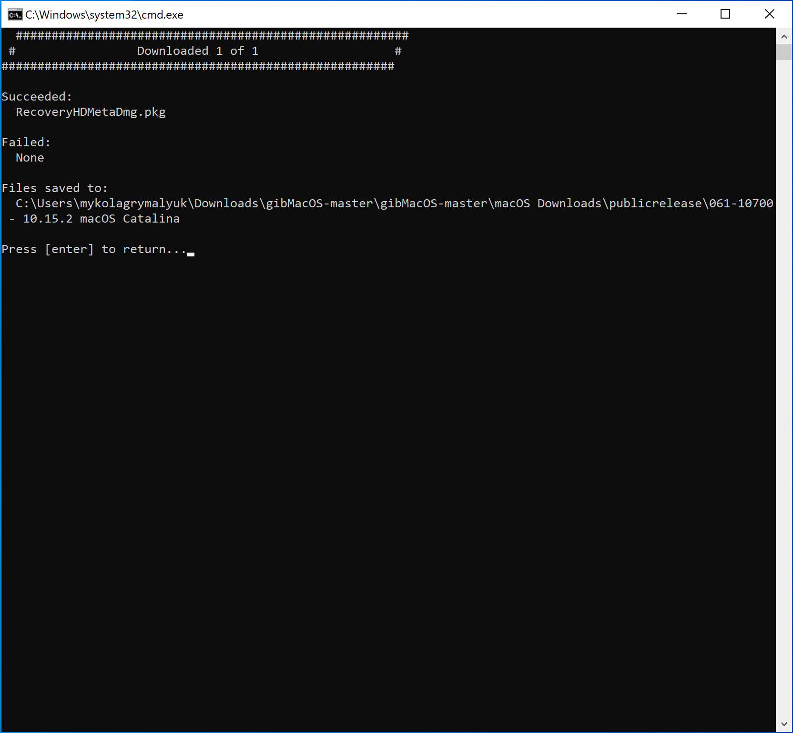
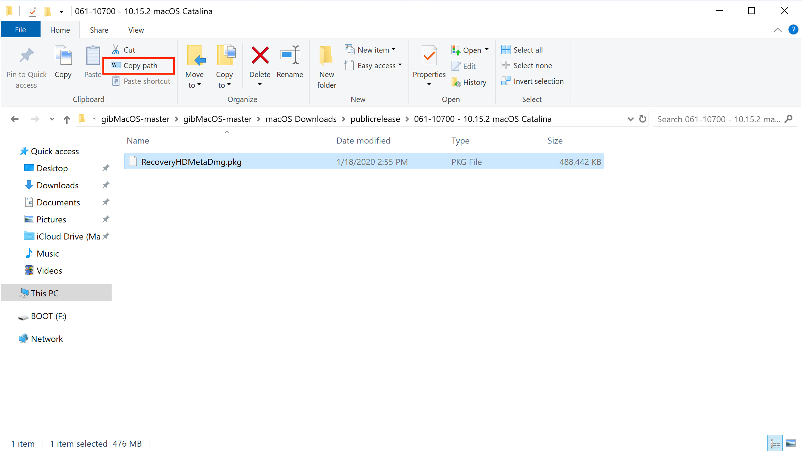
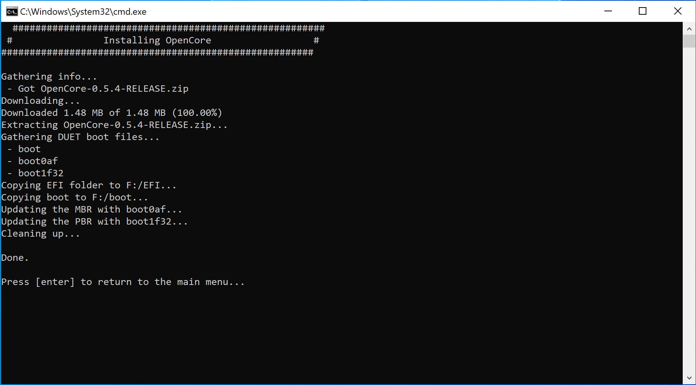
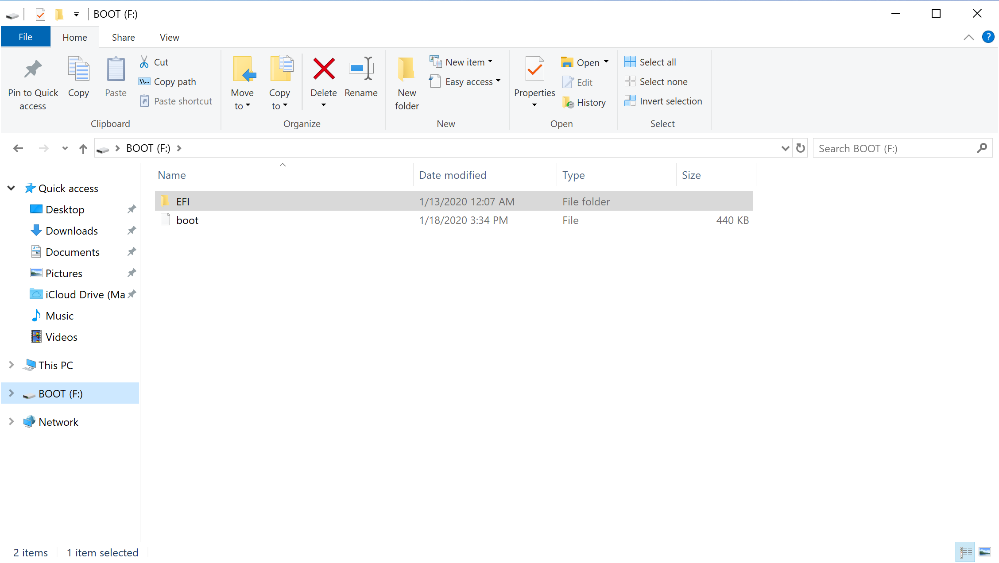

Last modified: Sat May 09 2020 17:34:40 GMT+0000 (Coordinated Universal Time)
Making the installer in Windows
- Supported version: 0.5.8
While you don't need a fresh install of macOS to use OpenCore, some users prefer having a fresh slate with their boot manager upgrades.
To start you'll need the following:
- 4GB USB Stick
- GibMacOS
Downloading macOS
To start, open gibMacOS.bat as Admin and select Toggle Recovery-Only:

Now search through for your desired version of macOS, for this example we'll choose option 5 for macOS Catalina:

This will download the RecoveryHDMetaDmg.pkg to \gibmacos-master\macOS Downloads\publicrelease\xxx-xxxxx - 10.x.x macOS xxx

Making the installer
Next open MakeInstall.bat as Admin and select your drive with option O for OpenCore( ex: 1O).

Once your drive is formatted, it will then ask you for the RecoveryHDMetaDMG.pkg that we downloaded earlier. Top left of the file window will let you copy the file path:


MakeInstall will finish up by installing OpenCore to your USB's EFI System Partition, you can find this partition labeled as BOOT:

